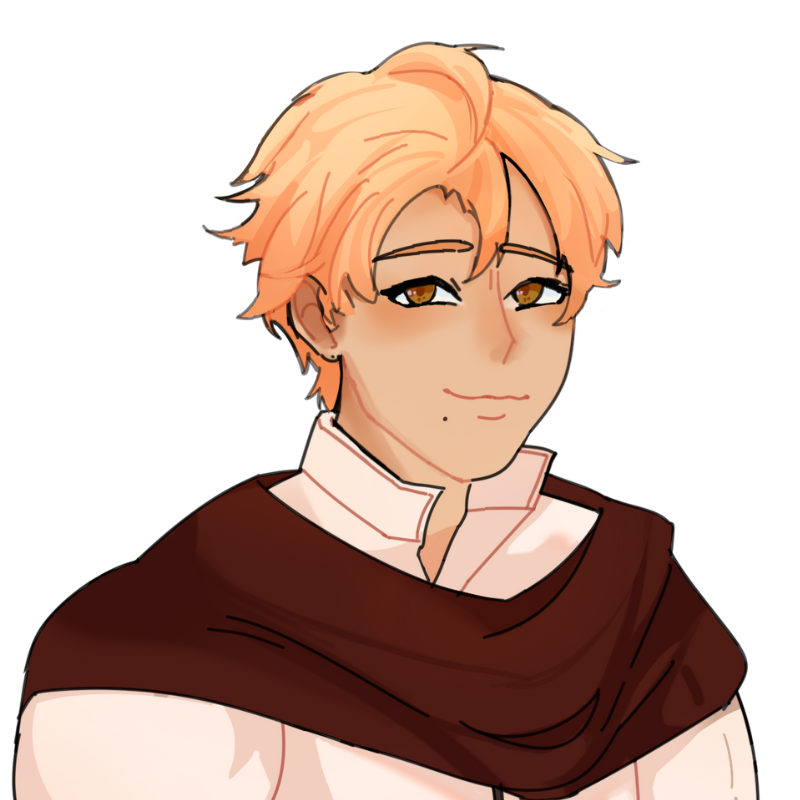

'hiraeth' is a game primarily about grief. Noah's closest companion, Abel, has died. Visit Abel's hometown and relive the moments the two have spent together while travelling, and perhaps, witness Noah turn his grief into strength.
This is also an ongoing project of mine narrating the story of one of my OCs, Noah. Created in RPG MAKER MZ!
Credits:
He/They | 27 | Half-Illuna
Noah is a travelling mage hailing from a small town who practices magic. As the town he is from is quite unknown to others and is far from other towns, he did not get to interact much to people, which is why he is quite aloof and speaks roughly to others and is not afraid to speak out his mind. Noah is also reluctant to show his feelings to others. He cares alot for his friends though, even if he doesn’t show it much. Although not great at conversing, he is a great listener to people.
He/Him | 25 | Human
Abel is a swordsman currently travelling with Noah. He is extremely bright and friendly, and is also willing to help anyone, even strangers. Abel is also very popular as he’s nice to everyone, especially to elderly people. The demeanor he tends to show people is that of a knight, diligent and gentle. When he’s alone with Noah, he tends to be more noisy, playful and rowdier, even picking fights. This side of him only shows up to others when he’s drunk. Abel tends to be caring to others to a fault, that it tends to get him in trouble as he’s way too trusting. He is also naive at times, and would get scammed by merchants until Noah intervenes.
As of now the game is 65% completed! Only a few more scenes and tweaks to its UI. I've had a long hiatus on working on this because I got busy on Uni but I'll continue it soon!
Go back